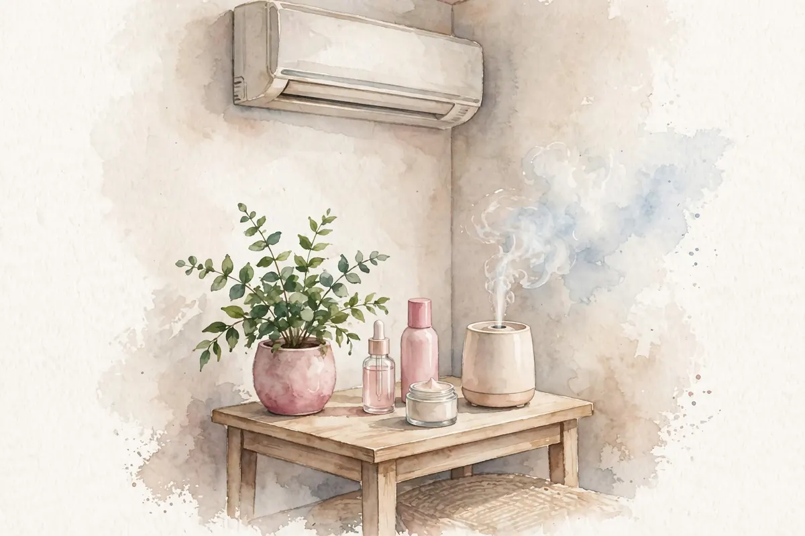
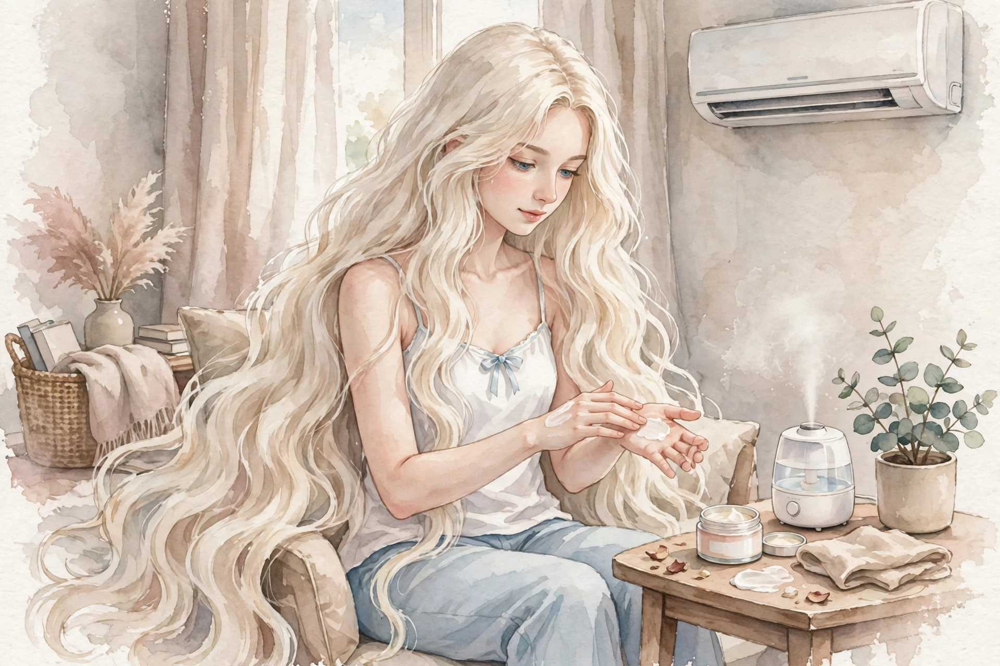

トップ ＞ スキンケア ＞ 冷暖房の効いた室内でのケアの工夫
冷暖房の効いた室内でのケアの工夫

エアコンの風が一日中当たる室内は、季節を問わず空気が乾きがちです。オフィスで働くお客様からも、夕方になると肌のつっぱりを感じる、という声をよく聞きます。この記事では、室内環境と日中のケアの工夫を整理します。
まずは「風の通り道」から外れる
ケアの前に、環境側の工夫があります。エアコンの風が直接当たる席は、肌の水分が飛びやすい場所です。席の位置や風向きを調整できる環境なら、それが一番の対策になります。卓上の小さな加湿器を使える職場では、顔の正面ではなく、少し離れた位置に置くのが扱いやすいでしょう。
マスクを着ける場面では、口まわりの蒸れとほかの部分の乾燥が同時に起きます。場所によって状態が違うことを知っておくと、日中の付け足しも部分ごとに考えられます。
日中の付け足しは「押さえる」動作で
日中に乾燥を感じたときの付け足しは、手のひらでそっと押さえる動作が基本です。メイクをしている日は、こすって伸ばすとよれの原因になります。使うアイテムは、職場に置いておける小さなサイズのものや、ミストタイプなど、短時間で済むものが向いています。
回数の目安は、昼休みと午後の区切りなど、タイミングを決めておくと過不足がありません。感じるたびに何度も重ねるより、決まったタイミングで少量ずつ、という形のほうが、夕方の状態が読みやすくなります。
帰宅後のケアで、その日をリセットする
室内で長く過ごした日は、帰宅後の洗顔と夜のケアが、その日のリセットになります。落とすケアを丁寧に行い、化粧水から仕上げまでの流れを、いつもよりゆっくり行うのもよいでしょう。入浴で体が温まったあとは、水分が飛びやすいので、間を空けずにケアを始めるのが基本です。
環境の乾燥は、アイテムの力だけで解決しようとしないことが大切です。席、加湿、付け足しのタイミング、帰宅後の流れ。複数の小さな工夫の積み重ねが、室内での一日を支えます。症状として気になる状態が続く場合は、皮膚科などの専門家に相談してください。
加湿器まわりの手入れも、環境ケアの一部
室内の乾燥対策として加湿器を使う場合は、機器自体の手入れも欠かせません。水を入れるタンクやフィルターは、メーカーの案内に従って定期的に手入れをします。手入れの行き届いた加湿は、空気のうるおいを保つ助けになりますが、手入れを怠ると逆に清潔さの面で心配が残ります。
湿度計があると、室内の状態を数字で見られます。「乾燥している気がする」ではなく「何パーセントか」で判断できると、付け足しのタイミングも決めやすくなります。環境を測ることは、ケアを感覚だけに頼らないための工夫です。
室内での工夫は、服装との組み合わせでも変わります。首元や顔まわりに風が当たり続ける環境では、髪型やストールなどで風の当たり方を調整できる場合もあります。ケア用品だけでなく、過ごし方全体で乾燥への備えを考えるのが、室内ケアの実態です。
また、湿度の低い室内では、静電気などで髪が顔に張り付くことも増えます。顔に触れるものの清潔さという観点では、髪の扱いも無関係ではありません。環境は、肌だけでなく、肌に触れるものすべてに影響します。広い視点で室内を見直してみてください。
室内の乾燥対策は、就寝中の環境にも関係します。寝室のエアコンを使う季節は、寝ている間の乾燥も進みます。就寝前のケアの仕上げを、その季節に合わせて調整する、枕元の環境を整える、といった夜側の工夫も、室内ケアの続きとして考えられます。
日中の職場と、夜の自宅。過ごす場所ごとに乾燥の形は違います。場所ごとの工夫を小さく積むことが、一日を通した対策になります。一つのアイテムで全部を解決しようとしないことが、現実的な考え方です。
環境への工夫は、効果を測りにくいものです。しかし、夕方のつっぱり感のような、日々の小さな感覚が、その答え合わせになります。感覚を観察する習慣とセットで、工夫を続けてください。

セラフィナ「室内の乾燥は、置き場所と回数で工夫できるんだね。環境もケアのうちだよ」